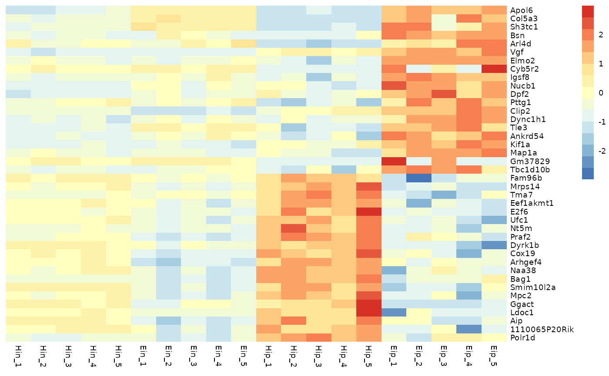
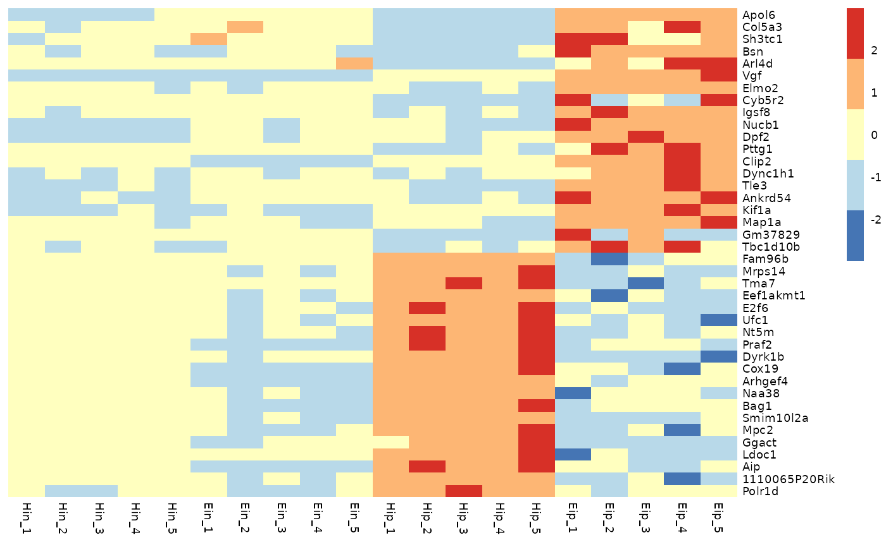
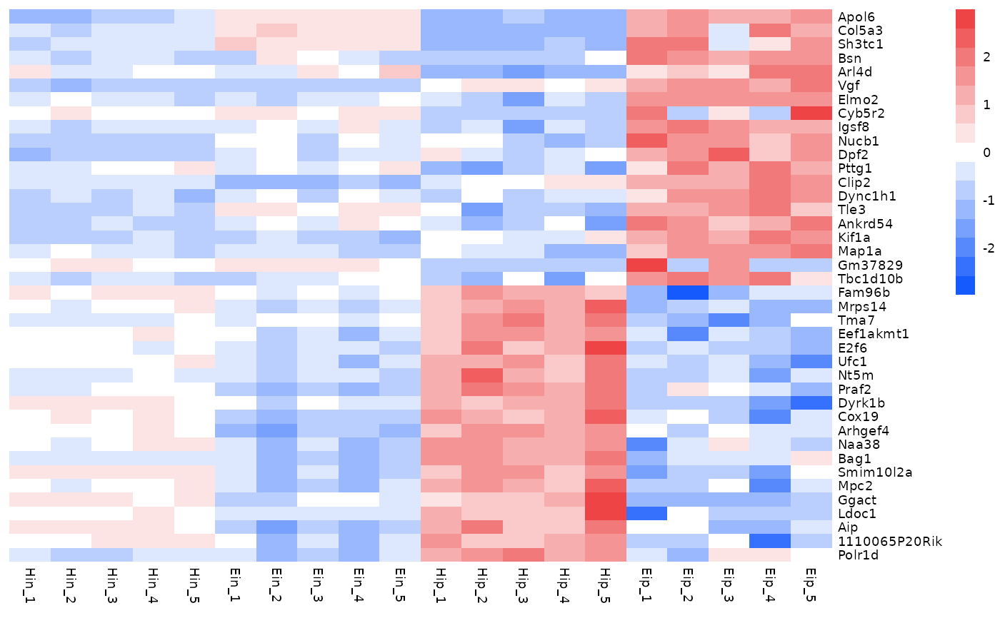
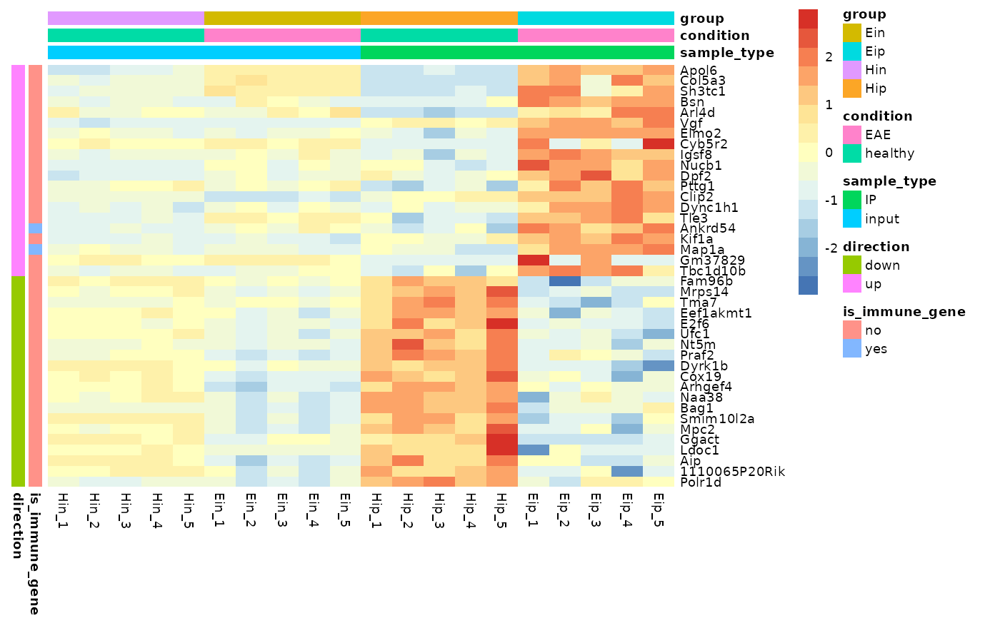
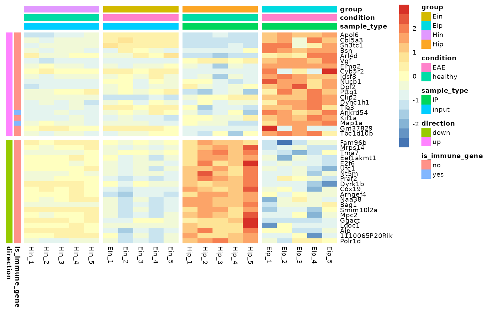

A tidyverse-style interface to the powerful heatmap package pheatmap. It enables the convenient generation of complex heatmaps from tidy data.
Usage
tidyheatmap(
df,
rows,
columns,
values,
colors = NA,
color_legend_n = 15,
color_legend_min = NA,
color_legend_max = NA,
color_na = "#DDDDDD",
annotation_row = NULL,
annotation_col = NULL,
gaps_row = NULL,
gaps_col = NULL,
show_selected_row_labels = NULL,
show_selected_col_labels = NULL,
filename = NA,
scale = "none",
fontsize = 7,
cellwidth = NA,
cellheight = NA,
cluster_rows = FALSE,
cluster_cols = FALSE,
border_color = NA,
kmeans_k = NA,
clustering_distance_rows = "euclidean",
clustering_distance_cols = "euclidean",
clustering_method = "complete",
clustering_callback = function(x, ...) {
return(x)
},
cutree_rows = NA,
cutree_cols = NA,
treeheight_row = ifelse((class(cluster_rows) == "hclust") || cluster_rows, 50, 0),
treeheight_col = ifelse((class(cluster_cols) == "hclust") || cluster_cols, 50, 0),
legend = TRUE,
legend_breaks = NA,
legend_labels = NA,
annotation_colors = NA,
annotation_legend = TRUE,
annotation_names_row = TRUE,
annotation_names_col = TRUE,
drop_levels = TRUE,
show_rownames = TRUE,
show_colnames = TRUE,
main = NA,
fontsize_row = fontsize,
fontsize_col = fontsize,
angle_col = c("270", "0", "45", "90", "315"),
display_numbers = FALSE,
number_format = "%.2f",
number_color = "grey30",
fontsize_number = 0.8 * fontsize,
width = NA,
height = NA,
silent = FALSE
)Arguments
- df
A tidy dataframe in long format.
- rows, columns
Column in the dataframe to use for heatmap
rowsandcolumns.- values
Column in the dataframe containing the values to be color coded in the heatmap cells.
- colors
Vector of colors used for the color legend.
- color_legend_n
Number of colors in the color legend.
- color_legend_min, color_legend_max
Min and max value of the color legend. Values smaller then the
color_legend_minwill have the lowest color,valuesbigger than thecolor_legend_maxwill get the highest color.- color_na
Color to use for
NAsinvalues.- annotation_row, annotation_col
Column(s) in the dataframe to use for
rowandcolumnannotation. To use multiple columns for annotation combine then byc(column1, column2).- gaps_row, gaps_col
Column in the dataframe to use for use for
rowandcolumngaps.- show_selected_row_labels, show_selected_col_labels
Only display a subset of selected labels for
rowsandcolumns. Provide selected labels asc("label1", "label2").- filename
file path where to save the picture. Filetype is decided by the extension in the path. Currently following formats are supported: png, pdf, tiff, bmp, jpeg. Even if the plot does not fit into the plotting window, the file size is calculated so that the plot would fit there, unless specified otherwise.
- scale
character indicating if the values should be centered and scaled in either the row direction or the column direction, or none. Corresponding values are
"row","column"and"none"- fontsize
base fontsize for the plot
- cellwidth
individual cell width in points. If left as NA, then the values depend on the size of plotting window.
- cellheight
individual cell height in points. If left as NA, then the values depend on the size of plotting window.
- cluster_rows
boolean values determining if rows should be clustered or
hclustobject,- cluster_cols
boolean values determining if columns should be clustered or
hclustobject.- border_color
color of cell borders on heatmap, use NA if no border should be drawn.
- kmeans_k
the number of kmeans clusters to make, if we want to aggregate the rows before drawing heatmap. If NA then the rows are not aggregated.
- clustering_distance_rows
distance measure used in clustering rows. Possible values are
"correlation"for Pearson correlation and all the distances supported bydist, such as"euclidean", etc. If the value is none of the above it is assumed that a distance matrix is provided.- clustering_distance_cols
distance measure used in clustering columns. Possible values the same as for clustering_distance_rows.
- clustering_method
clustering method used. Accepts the same values as
hclust.- clustering_callback
callback function to modify the clustering. Is called with two parameters: original
hclustobject and the matrix used for clustering. Must return ahclustobject.- cutree_rows
number of clusters the rows are divided into, based on the hierarchical clustering (using cutree), if rows are not clustered, the argument is ignored
- cutree_cols
similar to
cutree_rows, but for columns- treeheight_row
the height of a tree for rows, if these are clustered. Default value 50 points.
- treeheight_col
the height of a tree for columns, if these are clustered. Default value 50 points.
- legend
logical to determine if legend should be drawn or not.
- legend_breaks
vector of breakpoints for the legend.
- legend_labels
vector of labels for the
legend_breaks.- annotation_colors
list for specifying annotation_row and annotation_col track colors manually. It is possible to define the colors for only some of the features. Check examples for details.
- annotation_legend
boolean value showing if the legend for annotation tracks should be drawn.
- annotation_names_row
boolean value showing if the names for row annotation tracks should be drawn.
- annotation_names_col
boolean value showing if the names for column annotation tracks should be drawn.
- drop_levels
logical to determine if unused levels are also shown in the legend
- show_rownames
boolean specifying if column names are be shown.
- show_colnames
boolean specifying if column names are be shown.
- main
the title of the plot
- fontsize_row
fontsize for rownames (Default: fontsize)
- fontsize_col
fontsize for colnames (Default: fontsize)
- angle_col
angle of the column labels, right now one can choose only from few predefined options (0, 45, 90, 270 and 315)
- display_numbers
logical determining if the numeric values are also printed to the cells. If this is a matrix (with same dimensions as original matrix), the contents of the matrix are shown instead of original values.
- number_format
format strings (C printf style) of the numbers shown in cells. For example "
%.2f" shows 2 decimal places and "%.1e" shows exponential notation (see more insprintf).- number_color
color of the text
- fontsize_number
fontsize of the numbers displayed in cells
- width
manual option for determining the output file width in inches.
- height
manual option for determining the output file height in inches.
- silent
do not draw the plot (useful when using the gtable output)
Value
Invisibly a pheatmap object that is a list with components
tree_rowthe clustering of rows ashclustobjecttree_colthe clustering of columns ashclustobjectkmeansthe kmeans clustering of rows if parameterkmeans_kwas specifiedgtableagtableobject containing the heatmap, can be used for combining the heatmap with other plots
Examples
# Basic example
tidyheatmap(data_exprs,
rows = external_gene_name,
columns = sample,
values = expression,
scale = "row"
)

# Change number of colors in color lengend
tidyheatmap(data_exprs,
rows = external_gene_name,
columns = sample,
values = expression,
scale = "row",
color_legend_n = 5
)

# Change color in color legend
tidyheatmap(data_exprs,
rows = external_gene_name,
columns = sample,
values = expression,
scale = "row",
colors = c("#145afc","#ffffff","#ee4445")
)

# Add row and column annotation
tidyheatmap(data_exprs,
rows = external_gene_name,
columns = sample,
values = expression,
scale = "row",
annotation_col = c(sample_type, condition, group),
annotation_row = c(is_immune_gene, direction)
)

# Add gaps between rows and columns
tidyheatmap(data_exprs,
rows = external_gene_name,
columns = sample,
values = expression,
scale = "row",
annotation_col = c(sample_type, condition, group),
annotation_row = c(is_immune_gene, direction),
gaps_row = direction,
gaps_col = group
)
